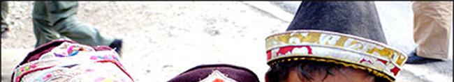

文殊喜乐园
世界和平塔的四面墙壁上，塑着佛祖释迦摩尼四个阶段的雕像，雕像场景分别反映了佛祖在尼泊尔蓝毗尼的无忧树下诞生、佛祖在菩提伽耶的菩提树下觉悟成佛、释迦牟尼佛在鹿野苑初转法轮、释迦牟尼佛在拘尸那伽城入灭。

随喜说明
随喜文殊喜乐园
世界和平塔的四面墙壁上，塑着佛祖释迦摩尼四个阶段的雕像，雕像场景分别反映了佛祖在尼泊尔蓝毗尼的无忧树下诞生、佛祖在菩提伽耶的菩提树下觉悟成佛、释迦牟尼佛在鹿野苑初转法轮、释迦牟尼佛在拘尸那伽城入灭。